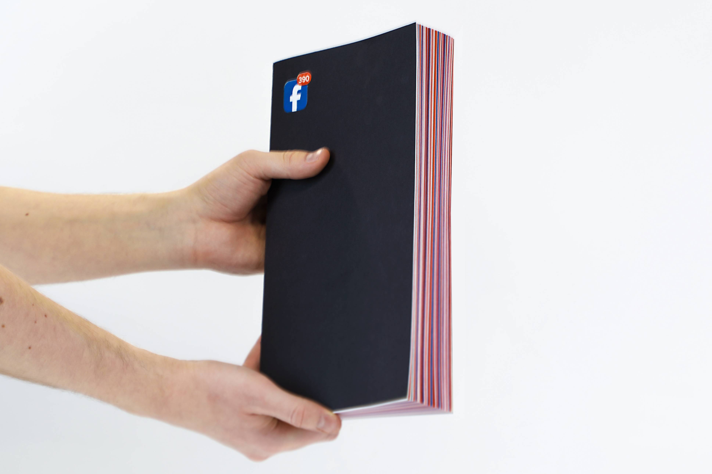
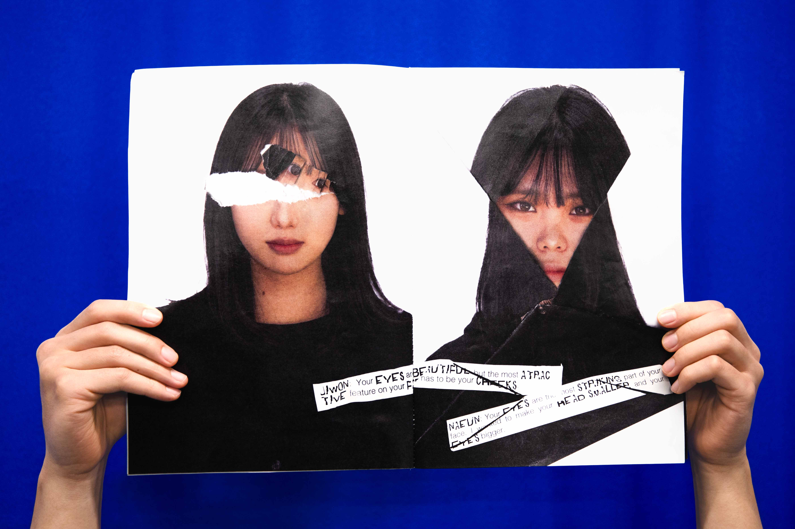
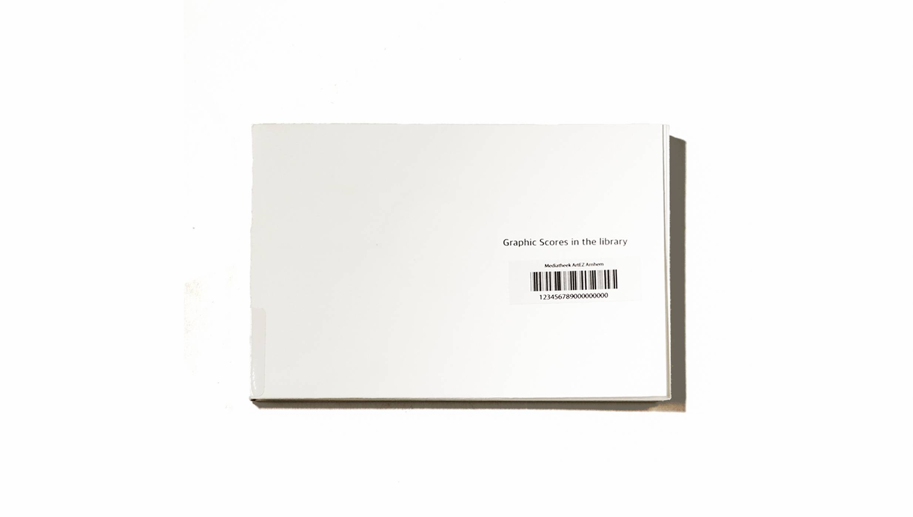
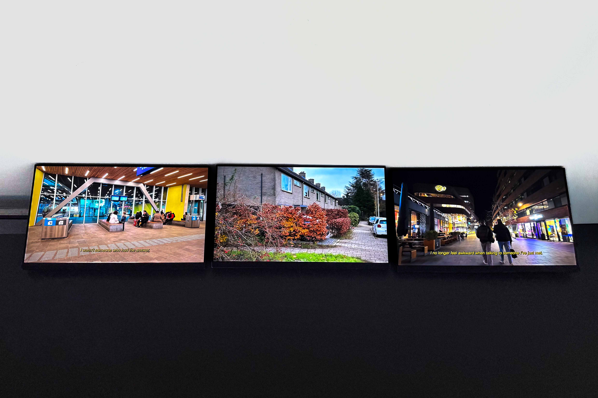

Fake news on facebook
publication, 2025
 Foliege
photo series, 2025
The Lovers
publication, 2025
Foliege
photo series, 2025
The Lovers
publication, 2025

Perspective Transition
publication, 2025

Graphic Scores in the Library
publication, 2024

video
video, 2025